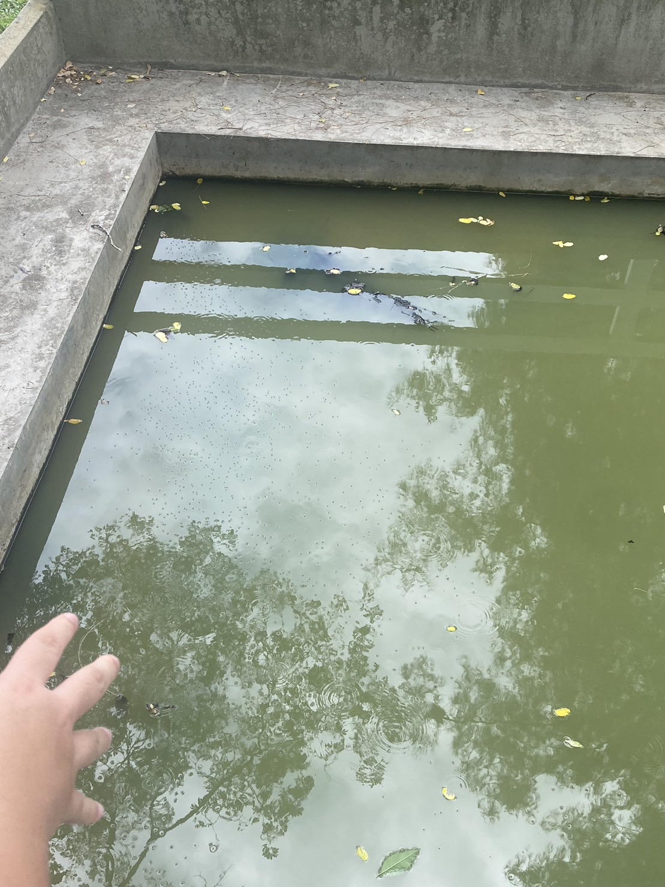

โครงงานกังหันบําบัดนํ้าพลังงานแสงอาทิตย์SWR
ที่มาและความสำคัญ : เนื่องด้วยโรงเรียนสารสาสน์วิเทศร่มเกล้า ถนนร่มเกล้า แขวงคลองสามประเวศ เขตลาดกระบัง จังหวัดกรุงเทพมหานคร มีสระนํ้าอยู่ 3 สระด้วยกัน ที่เคยนํามาใช้อุปโภคภายในโรงเรียน เช่น รดนํ้าต้นไม้ ตกแต่งสวน และขวดนํ้าในโรงเรียนที่ใช้แล้วมีจํานวนมาก ทําให้เกิดเป็นขยะ และรวมไปถึงค่าใช้จ่ายในโรงเรียนสูงที่โรงเรียนจะต้องนําเงินไปพัฒนาโรงเรียนในเรื่องต่างๆ ทั้งนี้ปัญหาในปัจจุบัน สระนํ้าที่เคยใช้ในการรดนํ้าต้นไม้หรือเป็นที่อยู่อาศัยของสัตว์นํ้าเป็นนํ็านิ่งและขาดออกซิเจนในนํ้า ส่งผลทําให้ในนํ้าเริ่มมีกลิ่น ปละสีนํ้าที่ขุ่น ที่เกิดจากการขาดอากาศในนํ้า ไม่สามารถนํามาใช้ในการอุปโภคในกืจกรรมต่างๆของโรงเรียนได้ เมื่อไม่มีการไหลของนํ้าก็ทําให้นํ้าไม่มีออกซิเจนหรือมีออกซิเจนในนํ้าที่ตํ่า ประกอบกับงบประมาณของโรงเรียนไม่เพียงพอต่อการพัฒนาสระนํ้า จึงต้องนําวัสดุที่เหลือใช้ภายในโรงเรียนมาสร้างให้เกิดประโยชน์สูงสุด เพื่อเป็นการลดค่าใช้จ่ายภายในโรงเรียนได้อีกทางหนึ่ง กลุ่มของนักเรียนระดับชั้นมัธยมศึกษาปีที่ 6 ปีการศึกษา 2565 ของโรงเรียนสารสาสน์วิเทศร่มเกล้าได้ร่วมกันคิดว่าจะทําอย่างไรให้นํ็ามีออกซิเจนเพิ่มขึ้นให้กับนํ้าที่ไม่มีการไหลเวีนรของนํ้าไม่ให้เกิดการเน่าเสีย และส่งกลิ่น จึงได้คิดที่จะทํากังหันนํ้าจากพลังงานแสงอาทิตย์ขึ้นมา โดยการนําวัสดุในโรงเรียนเข้ามาช่วนในการสร้างให้เกิดประโยชน์ เพื่อไม่ให้มีผลต่อค่าไฟฟ้า เป็นการช่วยประหยัดค่าใช้จ่ายในโรงเรียนโดยการใช้แผงโซลาเซลล์แทนพลังงานไฟฟ้า
ภาพปัญหาที่พบ:นํ้ามีการเน่าเสียและส่งกลิ่น สัตว์นํ้าไม่สามารถอาศัยอยู่ได้เนื่อจากในนํ้ามีอากาศไม่เพียงพอ
